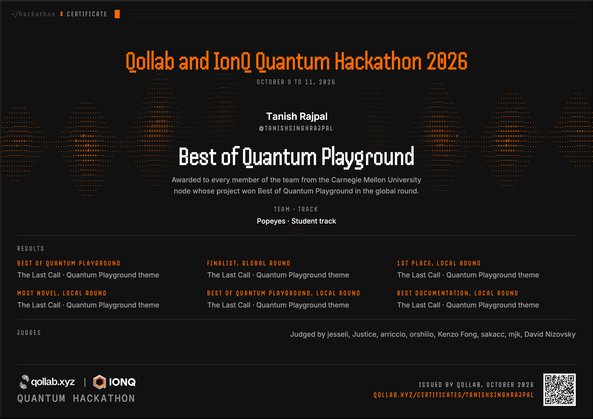
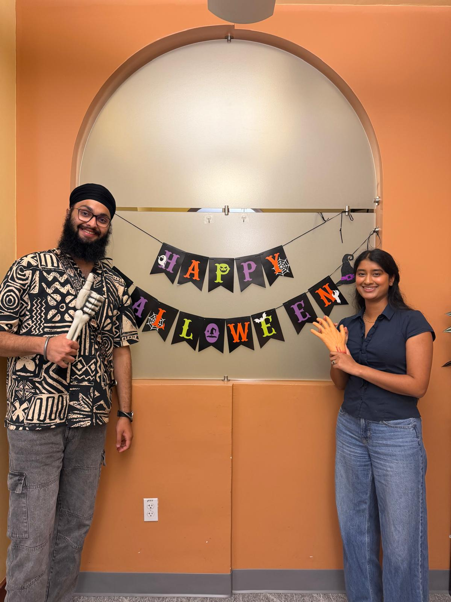
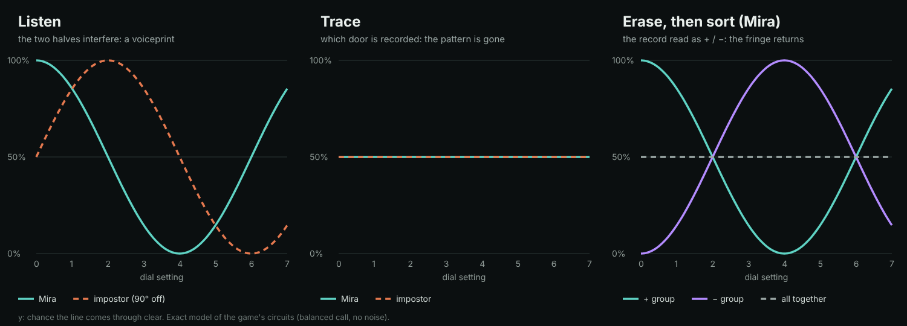
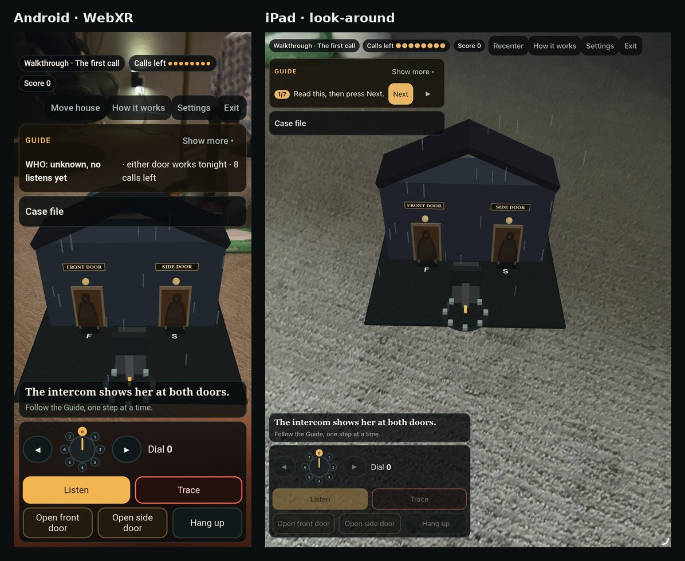

The Last Call wins Best of Quantum Playground
An AR horror game about interference and which-path information, recognized with a global specialty award at Qollab × IonQ and first place at the CMU node.

The Last Call, which I built with Abhinaya Nagalla as Team Popeyes, received the global Best of Quantum Playground specialty award at the Qollab × IonQ Global Quantum Hackathon. We were also finalists in the global round. At the Carnegie Mellon node, it also placed first among 12 projects and received Most Novel/Creative and Best Documentation.
The build weekend ran October 9–11, 2026. Qollab announced the global specialty awards on October 28. Quantum Playground recognizes playful and unexpected quantum projects; this is the global theme award, alongside the separate CMU node results.
Watch The Last Call on YouTube ↗
The results
- Global specialty award: Best of Quantum Playground.
- CMU node: first place, among 12 projects.
- CMU node specialty awards: Most Novel/Creative and Best Documentation.
Global award certificate

Verify the certificate on Qollab ↗ · Download certificate PDF ↓
Official CMU node results ↗ · Official global specialty awards ↗
Qollab's award announcement ↗ · The project on Qollab ↗

One call, two doors
Someone is outside, and the intercom shows the call arriving at two entrances. Is it Mira, or something copying her voice? Which door should you open? There are only a few calls left, and the actions that answer one question can destroy the evidence needed for the other.
The game's central mechanic is the trade-off between interference and which-path information. It is playable on a regular screen and in phone or tablet AR, where the house becomes part of the room around you.
- Listen: recombine the two door channels and turn a phase dial. The interference pattern helps distinguish the callers.
- Trace: record which door the call came through. That record removes the interference used to identify the caller.
- Erase: read the record in a complementary basis, then sort the results by its + or − outcome. Interference appears in the two conditional subsets; the pooled data remain flat.

Building the experience
The game combines quantum circuits and an evidence model with an intercom interface, story, and AR experience. The circuits are implemented with Qiskit, and the browser model was checked against a NumPy density-matrix reference. A spoken walkthrough, captions, keyboard controls, and a Gentle mode make the game easier to approach.
The AR version has documented device checks on Android with WebXR and on an iPad with look-around tracking. The look-around mode follows device rotation; the project also includes a printed-marker mode for position tracking.

What runs the quantum part?
The browser's Ideal model samples exact circuit probabilities, while its Illustrative noise option uses the project's own noise channel. The published Qollab game was tested on the built-in simulator. A separate IonQ companion project was run on the IonQ simulator with the Aria 1 noise model. Those documented IonQ results are simulator runs.
The circuits are deliberately small. The point is to make the information trade-off something a player must use to decide what to do next. The source repository includes the circuits, validation records, device checks, and attribution notes.
Play or explore the code
Thank you to Qollab, IonQ, and the Carnegie Mellon node organizers and judges for making the event possible and recognizing the project.